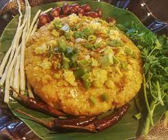
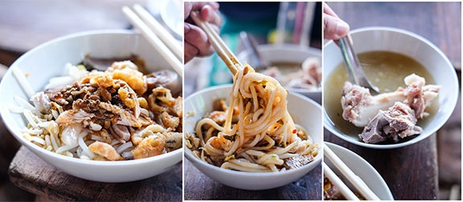
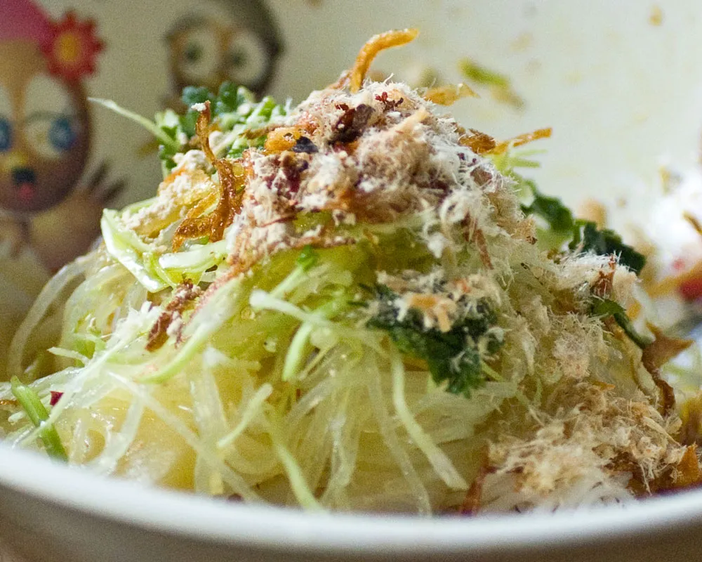
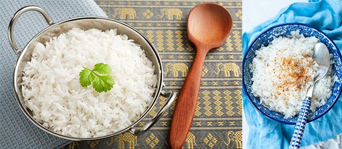
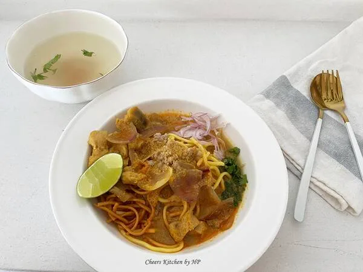
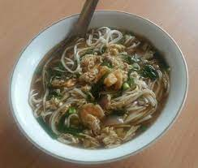

Ngar Htamin (Shan Style Rice Salad)
Known in Burmese as Nga Htamin (fish rice). It is originally from Shan State and the Shan cuisines are popular in our country. The recipe is prepared with rice cooked with turmeric and then mixed curied fish, some adding home-made tomato paste. This dish is served with leek roots, cloves of raw garlic, fried pork rinds and fried chili. Yummy!

Mandalay Myee Shay
Myee Shay is the specialty of Shan State but Mandalay version is mostly spread throughout country. It is medium size rice noodles served with the meat sauce mainly made of pork or chicken. Toasted chickpea flour is added for the thick mixture and garnished with bean sprouts and crispy fried garlic to be balanced taste.

A Thoke Sone
A Thoke Sone is one of most popular street foods in Myanmar. Among the varieties are Khout Swal Thoke (noodle salad), Tofu Thoke (tofu salad), papaya salad and also rice salad.

Burmese Coconut Rice
Coconut Rice – is a really delicious dish that couldn’t be simpler. It is prepared by soaking white rice in coconut milk or cooking it with coconut flakes. It goes well with many Thai dishes, some southern Indian dishes, as well as traditional Burmese cuisine

Shwe Taung Noodle
An irresistible noodle recipe with aromatic chicken curry and coconut oil. This noodle is similar to Ohn No Khao Swè (Burmese coconut noodle). However, coconut milk is cooked separately until it release its oil and garnish on the noodle when serving.

Noodles and curried duck
Noodles and curried duck (or pork) in broth with eggs